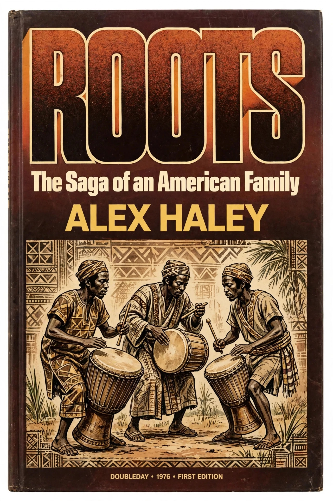

Roots: The Saga of an American Family is a 1976 novel by Alex Haley that traces seven generations of an African American family from the author's ancestor Kunta Kinte, born in The Gambia in the mid-18th century and sold into slavery, down to Haley himself. Combining historical research with narrative reconstruction, it became a publishing phenomenon, won a special Pulitzer Prize in 1977, and was adapted into the landmark 1977 television miniseries Roots, which drew some of the largest audiences in American broadcast history.
| Roots: The Saga of an American Family | |
|---|---|
 First edition cover of Roots showing the title and an illustration of African drummers First edition cover (1976) | |
| Author | Alex Haley |
| Published | 1976, Doubleday |
| Genre | Historical novel |
| Awards | Pulitzer Prize, special award (1977); National Book Award (1977) |
| Adaptations | Television miniseries Roots (1977), Roots: The Next Generations (1979) |
The novel opens in 1750 in the Mandinka village of Juffure in The Gambia, where the warrior Omoro's son Kunta Kinte is born. At about seventeen Kunta is captured by slave traders and transported on the slave ship Lord Ligonier to Annapolis, Maryland. After several escape attempts and a maiming meant to prevent flight, he marries Bell and they have a daughter, Kizzy, who is sold to a plantation in North Carolina, where she bears a son, Chicken George. The narrative follows successive generations — Chicken George, Tom, Cynthia, Bertha, and their descendants — through the Civil War, Reconstruction, and the Great Migration, ending with Haley's own childhood in Henning, Tennessee, and his research journey back to Juffure.
Haley spent some twelve years on the book, consulting plantation records, census data, shipping logs, and oral historians. He described it as "faction" — fact plus fiction — and acknowledged in the final chapter that dialogue and interior lives were imagined. He travelled to The Gambia, where the village griot Kebo Conteh recited a lineage matching the family names Haley carried from his grandmother's oral tradition.
Roots sold millions of copies and provoked a nationwide conversation about slavery and African American identity. In 1978 novelist Harold Courlander sued Haley, alleging that passages were copied from Courlander's 1967 novel The African; the case was settled with Haley admitting borrowing and paying Courlander a reported $650,000. Subsequent researchers also questioned details of Haley's Gambian research and the historicity of the Kunta Kinte lineage, though the book's cultural impact remains undisputed.
The ABC miniseries Roots, aired over eight nights in January 1977, was watched by an estimated 100 million viewers for its finale — a record at the time — and won nine Emmy Awards. Its cast included LeVar Burton as the young Kunta Kinte, John Amos, Ben Vereen, Leslie Uggams, and Louis Gossett Jr.
Categories: 1976 American novels · Historical novels · Alex Haley